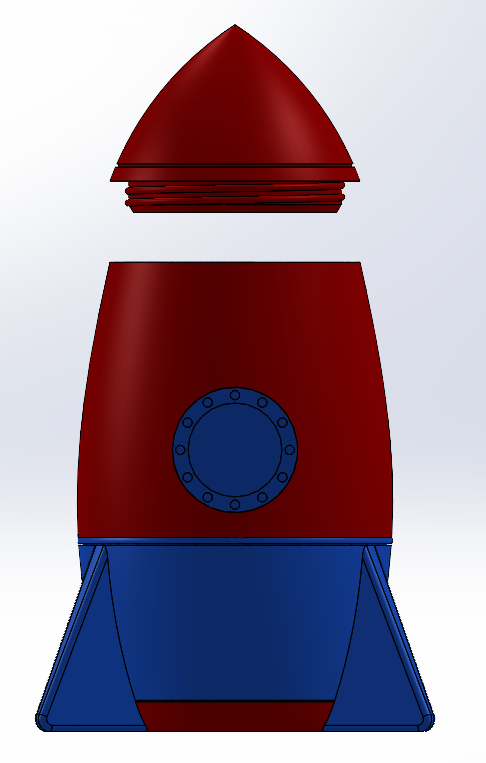

These projects showcase my ability to model complex geometry, interpret engineering drawings, and validate mechanical assemblies using SolidWorks. Over the course of the semester, I completed three major design challenges that involved creating a functional screw-top container, reconstructing a vise from partially incorrect drawings, and reverse-engineering an eggbeater using only hand-recorded measurements. Each project required a different combination of design intent, strategy, and problem solving, that ultimately strengthened my CAD proficiency and mechanical design intuition.
Project 1 -- Screw-Top Container:
Design a fully functional threaded container with complete creative freedom
while ensuring proper thread alignment, manufacturability, and part fit
Project 2 -- Machinist's Vise:
Recreate a vise assembly from a set of engineering drawings that intentionally included
dimensional inconsistencies. Identify, correct, and justify any adjustments needed to produce
a functional assembly.
Project 3 -- Eggbeater Reverse Engineering:
Disassemble and analyze an eggbeater, record all critical dimensions manually,
and recreate the mechanism in SolidWorks without accress to the original CAD or drawings.
Project 1: I designed a rocket-shapred container as a way to explore advanced modeling
tools while still meeting funcitonal requirements. I used features such as revolved cuts, swept threads,
shelling, and filleting to create a clean, manufacturable design. The lid and body were modeled as separate
parts and validated through a mated assembly and 3D printed model.
Project 2: I cross‑checked every drawing dimension, identified conflicting or impossible values,
and corrected them based on geometric logic and assembly constraints. After modeling each component,
I used mates, interference detection, and motion checks to verify that the vise operated smoothly and that the
corrected dimensions produced a functional mechanism.
Project 3:I sketched the eggbeater on computation paper and measured all critical features using a vernier caliper.
Because the original mechanism included complex curves and gear interactions, I focused on capturing the functional
relationships rather than replicating every aesthetic detail. I modeled the components using a combination of extrusions,
revolves, and gear‑like profiles, then assembled them to recreate the original motion.
All three assemblies were successfully modeled and validated in SolidWorks. The screw-top container demonstrated proper thread alignment, the vise operated without interference after dimensional correction, and the eggbeater assembly reproduced the original mechanical motion. These projects collectively highlight my ability to design, troubleshoot, and verify mechanical systems in a CAD environment.
SolidWorks • Vernier Caliper • 3D Printer
PLA Filament